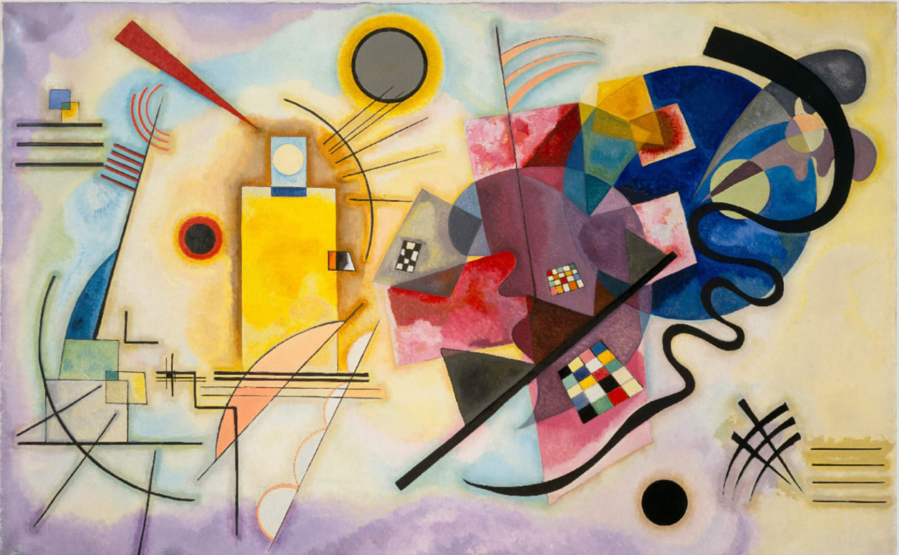

ANO 24 • • Nº 45

Porto Alegre | RS

A respeito do instigante tema abordado na presente edição do Jornal da SPPA...

Com seus avanços tecnológicos e a criação de tecnologias virtuais, a era digital iniciou...
Como podemos abordar as contribuições da psicanálise sobre a sexualidade no mundo ocidental?
A palavra virtualidade contém significados que trazem uma luz diferente ao que o senso comum...
É necessário saudar a iniciativa do Jornal da SPPA ao se ocupar do tema da virtualidade...
Ao propor os temas dos números de 2025, a Comissão Editorial da Revista de Psicanálise da SPPA...
O final do segundo semestre de 2024 e o início de 2025 foram marcados por instigantes atividades...
O ano de 2025 começou com variadas atividades na Diretoria Psicanálise na Cultura. Em janeiro...